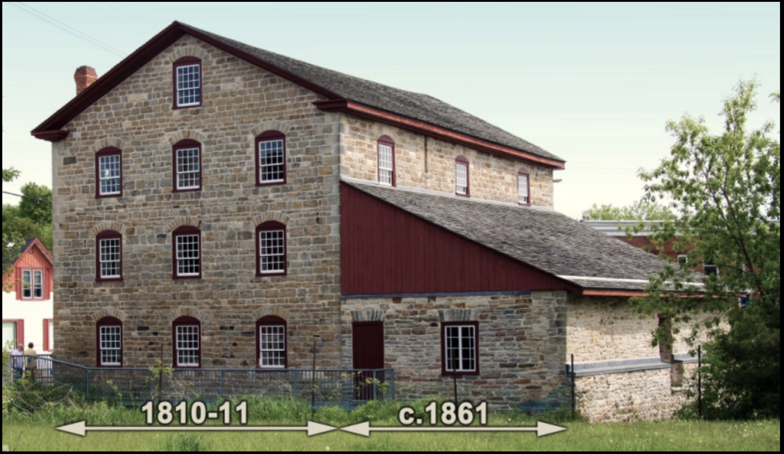

Origins of the Mill
William Jones
& Ira Schofield
on the Oliver Evans
automatic plan
Construction of the mill began in the spring of 1810. Its organizers, William Jones and Ira Schofield, hired a skilled millwright whose name is not known to us — the structure raised in dressed local limestone would be described within a decade as "unquestionably the best building of the kind in Upper Canada."
The structure is a textbook example of an Oliver Evans automatic mill, designed so that grain, once loaded, would be lifted, cleaned, milled, sifted, and barrelled by an integrated system of elevators, conveyors, and hoppers — with minimal manual handling. The walls were laid in dressed limestone, quarried and blasted from bedrock on site. The mill was built specifically as a merchant mill: buying grain from local farmers and producing flour for sale.
The hamlet Jones and Schofield built for — first called Stone Mills, later Beverley, finally Delta — was scarcely twenty years old. Within a generation the mill had passed through several proprietors, eventually coming under the ownership of Walter Henderson Denaut, a wealthy Delta merchant whose family name still marks the finest house in the village.

The original 1810–11 limestone block (left) and the c.1861 turbine hall extension (right) — both sections visible in the standing structure today.
add the sawmill
and carding works

"W. H. Denaut, Merchant. One grist mill, unfinished or under repair. One run of stones in operation by water power. Will cost when finished, £2,600."
W. Jones · I. Schofield
Construction
1810 – 11
Building material
Dressed local limestone